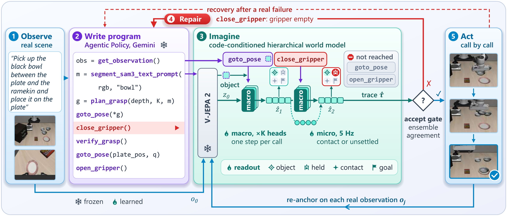
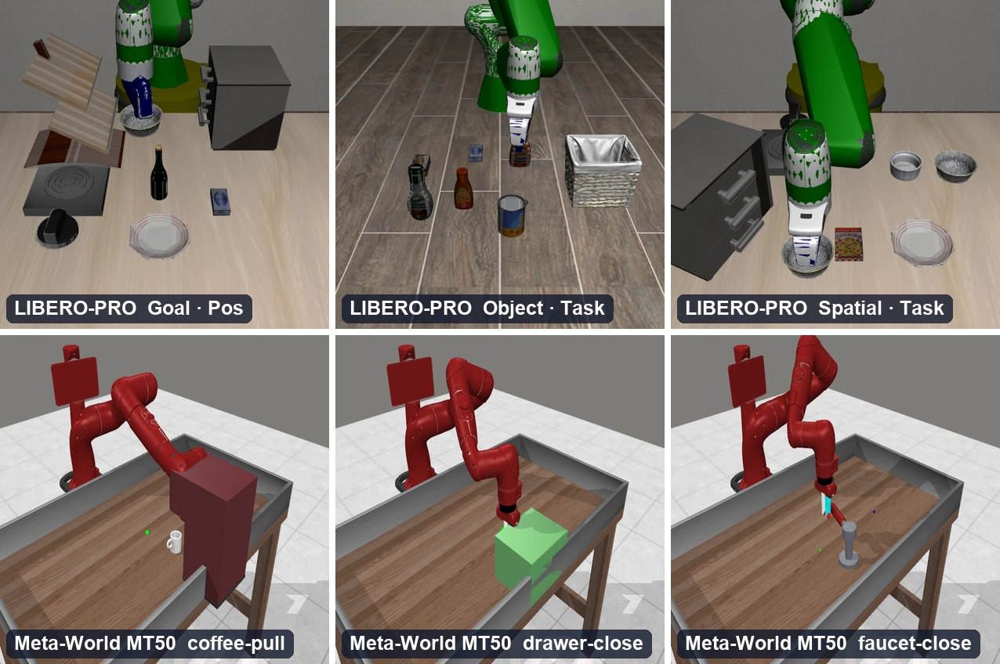

Agentic-LWM
Grounding Multimodal Policies in Hierarchical Latent World Model
1Yeungnam University, Republic of Korea*Corresponding author

Agentic Policies act open loop
A handle mislocated by a few millimetres, a rim clipped during extraction or a grasp that slips leaves no trace in the agent's state. In a pilot on LIBERO-Spatial with such an agent and no world model (29 episodes), task completion was 0.448, and the two contact-rich extraction tasks had no successes.
Our insight: contact needs its own subspace, its own asymmetric penalty around irreversible failure, and a differentiable energy the agent can descend before it actuates.
Central question. Under object-position and task shifts that break end-to-end VLAs, does an Agentic Policy grounded in a latent world model keep its success, and does the model's verification stay reliable?
The agent proposes; A-HJEPA predicts, scores and refines
Agentic Policy
Gemini writes the robot program with perception and motion tools (SAM3, GraspNet, IK), merges three candidate programs into one, and re-generates over several turns. It proposes each action chunk and its joint goal.
Scene and contact tokens
A frozen V-JEPA 2 encoder turns the agentview and wrist cameras into tokens, joined by proprioception and force. Scene tokens carry objects, layout and arm; contact tokens carry wrist, proprioception and force.
Bi-level A-HJEPA
A block-causal predictor rolls the tokens forward at a 5 Hz micro step and a stride-4 macro step under end-effector delta actions, and predicts contact from the stop-gradient predicted scene.
Failure certificate, sample-and-select, recovery
A failure head on the predicted contact tokens scores the chance of a collision or a drop. A chunk under the threshold runs; otherwise 16 via-point paths to the same goal are scored in one rollout and the lowest is kept. A failure triggers recovery: interception, retreat, re-observation and re-synthesis.
The failure head is supervised and calibrated on training cells only; proprioceptive failure anchors are kept as an ablation.
A protocol built to attribute every gain
LIBERO-PRO from perception only: the Object, Goal and Spatial suites under the Pos and Task perturbations, six cells. Language-model proposals are cached and replayed, each ablation changes one component, and test failures are counted from simulator contact labels that neither the agent nor the world model sees.

Ablation ladder each row changes one component
| Row | Variant |
|---|---|
| No world model (the Agentic Policy alone) | |
| A0 | A2, certify and raise only |
| A1 | Monolithic latent with refinement, equal capacity |
| A2 | + scene/contact factorisation (full system) |
| A3 | + proprioceptive failure anchors and phase margin (ablation) |
Verification holds under shift
On shifted cells, A2's failure score ranks chunks that end in a simulator-counted failure above the rest better than the stronger of a proprioception-only and an action-only control.
The contact subspace helps
On the same cells, A2's failure AUROC exceeds the monolithic A1's, and its contact track probes contact better.
Fewer failures in closed loop
With paired replay at an equal cap on language-model calls, A2 has fewer simulator-counted failures per episode than the agent without a world model, with no lower completion.
Each hypothesis is falsified if the 95% bootstrap interval of its difference contains zero. Results will be added once the runs are complete.
BibTeX
@inproceedings{sarowar2027agenticlwm,
title = {Agentic-LWM: Grounding Multimodal Policies in Hierarchical Latent World Model},
author = {Sarowar, Md Selim and Kim, Sungho},
booktitle = {Robotics: Science and Systems (RSS)},
year = {2027},
url = {https://physical-super-intelligence.github.io/Agentic-LWM/}
}